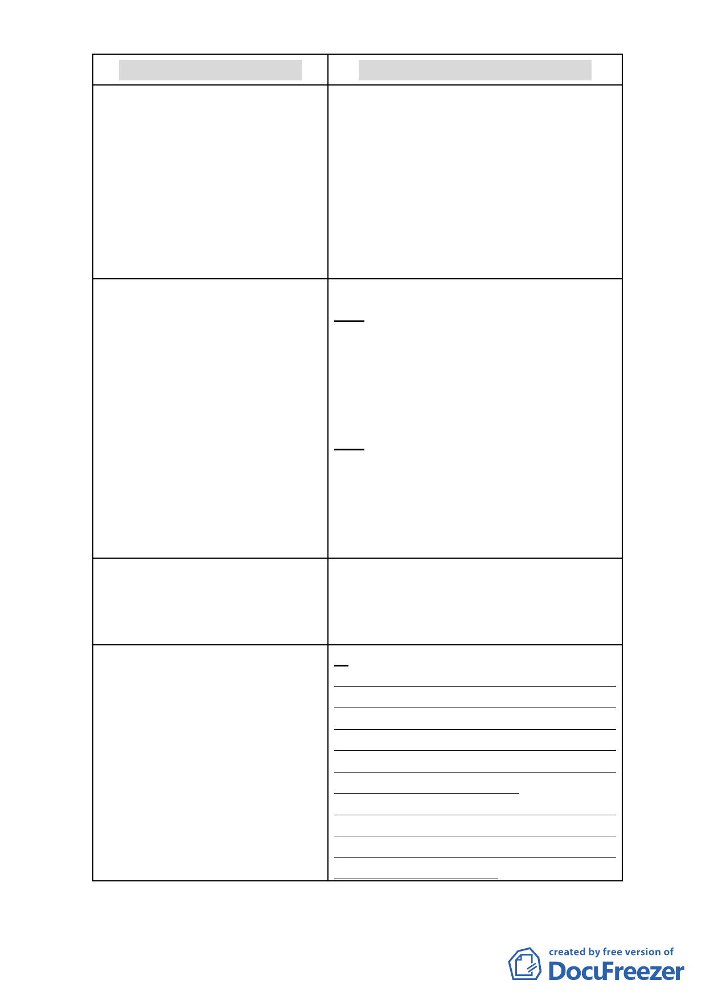

96.8.9(原公告)計畫內容
100.7.25辦理公開展覽計畫內容
宿舍)及第三種商業區(特)(日式宿 業區(特)(日式宿舍)之基地，應沿毗鄰之境界
舍)之基地，應沿毗鄰之境界線留設 線留設側院，其寬度不得小於2公尺，且最小
側院，其寬度不得小於2公尺，且最 淨 寬度不得小於1.5公尺。
小淨寬度不得小於1.5公尺。
(二) (刪除)
(二)第三種住宅區及第三之二種住
宅區建築物應留設前院，平均深度不
得小於4.5 公尺，且最小淨深度不得
小於2 公尺。但最小淨深度達3 公尺
以上者，不在此限。
六、非審議地區之院落規定(續上表) 六、非審議地區之院落規定(續上表)
(三)第三種住宅區及第三之二種住 (二)第三種住宅區及第三之二種住宅區建築
宅 區 建 築 物 側 面 基 地 線 臨 接 道 路 物側面基地線臨接道路者，仍應留設側院，不
者，仍應留設側院，不受土地使用分 受土地使用分區管制規則16 條規定之限制，
區管制規則16 條規定之限制，前揭 前揭側院寬度不得小於2 公尺，且最小淨深度
側院寬度不得小於2 公尺，且最小淨 不得小於1.5 公尺。
深度不得小於1.5 公尺。
(四)第三種住宅區及第三之二種住 (三)第三種住宅區及第三之二種住宅區建築
宅區建築物應於該指定退縮建築線 物應於該指定退縮建築線內之前院及側院種
內之前院及側院種植喬木，前述院落 植喬木，前述院落面積每27平方公尺應種植1
面積每27平方公尺應種植1 株(前院 株(前院則應置於沿街面)，未滿27平方公尺者
則應置於沿街面)，未滿27平方公尺 不在此限。
者不在此限。
七、開挖率：
七、開挖率：
本計畫區內非審議地區之第三種住 (刪除)
宅區及第三之二種住宅區建築基
地，其開挖率以60％為上限。
九、樹木保護
八、樹木保護：
本計畫區範圍內建築基地內達受保 (一)本計畫區範圍內建築基地內達受保護樹
護樹木標準之樹木，應依臺北市樹木 木標準之樹木，應依「臺北市樹木保護自治條
保護自治條例規定辦理，其未達受保 例」及「臺北市土地使用分區管制規則」規定
護樹木標準之植栽基於維繫街區整 辦理，其未達受保護樹木標準之植栽基於維繫
體風貌，經本府文化局指定者，應比 街區整體風貌，經本府文化局指定者，應比照
照樹木保護自治條例規定辦理。 樹木保護自治條例規定辦理。
(二)本計畫區內未指定或登錄為文化資產之
日式宿舍進行開發時，應調查並提送基地內之
喬木樹籍資料，提送相關保護計畫經本府文化
局審查同意後始得施作。
四、 本案係市府於100年7月22日以府都規字第10033909003號函
-6-